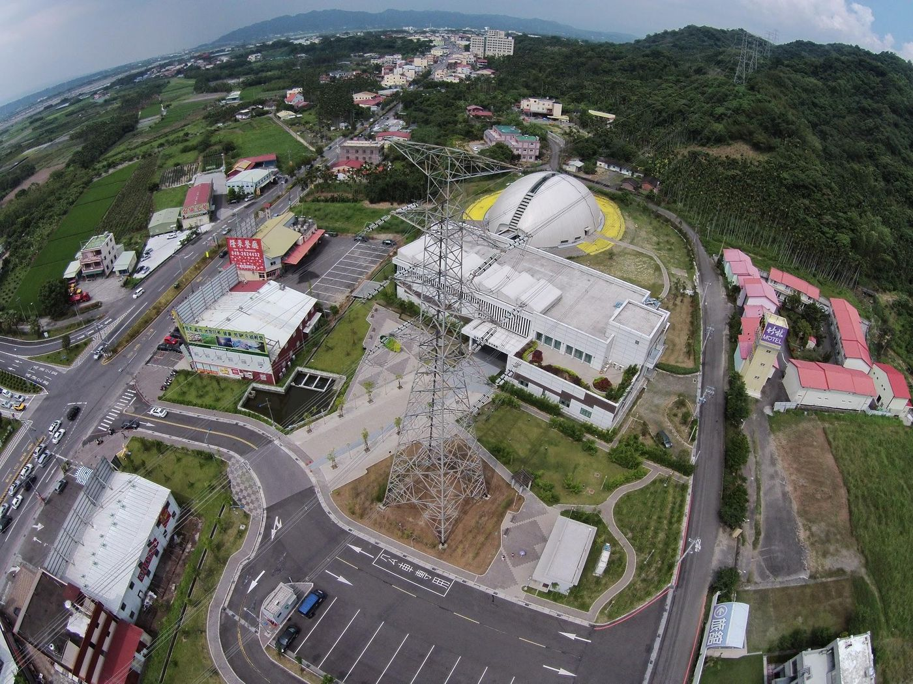

Farmland factories and supply chains
Use data and standards, not slogans.
English text is not ready yet; showing Traditional Chinese.

台灣農地工廠是老問題，卻很少被數據化：到底貢獻多少國家稅收？多少就業？多少排水排煙外部成本？
2020 疫情重創全球供應鏈，生產據點與備援被重新估價。台灣若只有「違建／合法」二元戰，會錯過產業與土地的真實權衡。
空拍機下的農地與疑似違建，是景觀也是政策失敗的縮影——不是單一貪念，而是長期執法、都市計畫與地方經濟的共業。
疫情證明高度管制可以成功。同樣的能力，可以用在環保標準：你要留在供應鏈，就達到排水排煙與安全規範——而不是一律消滅或一律放任。
土地政策是產業政策。把工廠從看不見的農地趕到更糟的地方，解決不了空污與食安；把標準與數據拉上桌，才開始像現代國家。
Source: Taiwan's Great Future — Switzerland Today, Taiwan Tomorrow — Eugene Chang · 2. Energy & environment